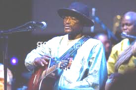
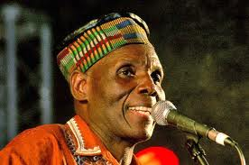
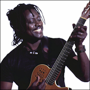
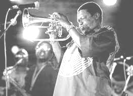

They speak acoustically!
Habib Koite, Afel Bocoum and Oliver Mthukudzi
By Peter Uduehi
Mali's Habib Koite and Afel Bocoum juxtaposing Zimbabwe's Oliver Mthukudzi come from world's apart geographically on the African continent but that chasm was bridged so effortlessly on Sunday night when they performed in their "Acoustic Africa" tour through Toronto.
It was a case of Zimbabwe's "Mbira" style meeting Mali's "Cora" and producing the most hypnotic and soulful African beat session. Guitars, the Mbira, drums and the goje (otherwise called the African violin) filled the sold-out room of the Royal Conservatory's Koener Hall. The three musicians sometimes, performing at the same time, played each other's regional styles with much class, presence and introspectiveness.
Asked if this fusion of West and Southern Africa was difficult, Mthukudzi told the African World News "not at all...why should it be difficult? We are Africans and have a passion for everything African," adding "I will say it was very interesting." Koite agreed challenging this reporter to ask if he's capable of performing other African styles apart from what the crowd just witnessed. Taking him up on his challenge he began singing Fela Kuti's lady in Pidgen English (a language much foreign to him even as an African), convincingly expressing his African musicianship. That was the audience's experience with the three musicians through the night as Mthukudzi's Shona chorus lines in Muchatuta, Manyenwe and Tozeza Baba were efficaciously backed up by Bocoum and Koite while the Malians' Adibara, Diadie, Gomni, Fimani, and Wassiye got equal reciprocity from Mthukudzi. It was an exchange some in the audience soaked up with fond memories, like African music promoter Patience Chirisa from Zimbabwe who said "I just didn't want the concert to end, stressing "I was feeling home-sick [as in Zimbabwe]".
Koite, Bocoum and Mthukudzi, currently touring North America and Europe, have baptized their effort with a CD/DVD collection entitled Acoustic Africa In Concert and it features 11 tracks on the CD and 14 on video. The collection is definitely a welcome addition to the world music environment always appreciative of the authentic African genre transcending time and space and evocative of the African Personality. See Acoustic Africa tour dates here.

Hugh Masekela shows passion for Africa in North American tour
Talks to reporter Peter Uduehi in Toronto
Story by Peter Uduehi
Bopping, weaving and strutting across the stage like a man who would not let go of his teenager years, 70-year-old trumpeter Hugh Masekela says he’s only getting stronger as time progresses.

The native South African performed recently at Toronto’s Royal Conservatory’s Koerner Hall before a 2,000-capacity audience on a rainy evening he jested was as impassioned as attending his concert on a flurry day some winters ago, an indication that he truly appreciates his Canadian fans. One fan, for example, returned the favourable remark after the night with a compliment referring to his entire aura on stage, particularly his dance moves by saying “he must be in his seventies; he is giving everyone especially those of us in our fifties the hope that life is not boring after all in old age”. Masekela told the Africa World he knew he was born to entertain the world at an early age. “I started playing the piano at six, and some people took notice of my talent including Trevor Huddleston who bought me my first trumpet. And when I found the trumpet I never put it down.” Huddleston was the Anglican priest who was once Archbishop of Mauritius and the Indian Ocean. He worked in South Africa and became known for his anti-apartheid activism. Banned from reentering South Africa by the white-minority dictatorial racist regime, he was President of the Anti-Apartheid Movement in 1981 from outside. He died in 1998. “I will never forget Huddleston,” Masekela said, noting he’s writing a book about the former archbishop from Bedford, England. “His work deserves mention. The South African legend, who spent many years living in different African countries and the United States in the apartheid years, says another passion of his these days is “creating the excellence of Africa. Yes I’m a child of the world, I love everybody even though I must tell you that being a part of the human specie in the past decades has left much to be desired because of the way we humans have treated each other...the racism, fascism and a plethora of things that are just disgusting”. He says he deals with these shortcomings with a great deal of laughter and humour because “it is the highest order of truth, to be able to laugh at ourselves”. Asked why Africa is a passion of his, Masekela said “we all have to start from somewhere and that he sees himself beyond ‘pan-Africanism’,” saying that “African is a huge concept for me; I believe Africa should be one country because I personally don’t recognize the current frontiers that are prescribed to Africa. We should be one, and if we are not careful as Africans we will disappear from the map considering the current happenings in the continent right now”. Extremely disappointed that Africans today don’t know much of their history and what it means to be called ‘an African’, the trumpeter notes that African people are not doing enough to mark their place in history. In decades to come, he opined, “people will say ‘there used to be a people called Africans’ if we are not careful”. Saying the recent World Cup staged in South Africa may have drawn the world to the continent in a big way, and may have helped hotel owners and other business people, it says nothing about the many injustices suffered by the continent over many centuries. Africa needs more than the World Cup to revive the culture, he said. “Until we begin to control things, the media, the arts, for example, our story will continue to be told by others who know zilch about us...and until we control the media and the arts” African musicians will continue to struggle to find their voice and be well-known as a staple on the diet of the world’s consumption. “The only way African musicians will become well known is if we Africans control the media,” he repeated, stressing “we need to have our priorities together,” adding that “most African musicians live outside the continent” because they are looking for ways to promote themselves worldwide.” Apart from Huddleston who inspired him, Masekela said his true inspirations are “people...everybody is my inspiration because basically I’m a child of the world...I draw inspiration from everyone I meet. I have lived in many cultures and been to many places. None the least was Nigeria, where he met the legendary Afro-beat musician the late Fela Kuti. Describing him (as well as the late singer Mariam Makeba of South Africa) as two of the greatest Africans that ever lived, Masekela says his knowledge of Africa and particularly West Africa was bolstered by “my meeting Fela. Fela not only taught me pidgin English, he was a joy and history in motion apart from being an extraordinary musician”. He said the current musical on Broadway about Fela’s life (which won three Tony Awards) is okay at best and that “Fela would have preferred a work on him to show more of his political and social sides. This is like a Disney version of Fela”. Playing tracks from his compositions over the years in his Toronto concert, Masekela traded funny stories of his youth in South Africa with his audience, folkloric anecdotes that can also be found in his new CD Jabulani, mostly a compilation of wedding songs from his native Zulu tradition. Tiken Jah Fakoly was in Toronto performing at Lula Lounge Batuki Music Society and Small World Music were proud to present the Toronto premiere for Tiken Jah Fakoly on Wednesday, March 9th, 2011 at the Lula Lounge located at 1585 Dundas St. West. at 9:00 pm. Oliver Mthukudzi from Zimbabwe, Habib Koite from Mali and Afel Bocum also from Mali was here recently. Great performance, Read story on our home page!
Following in the footsteps of his musical mentor, Alpha Blondy, Tiken Jah Fakoly has established himself as one of the figureheads of the reggae scene in Africa. Fusing his infectious reggae beat with hard-hitting lyrics Fakoly has ...become a spokesperson for an entire generation of music fans, speaking out on political and social issues through his songs. His huge success in France, where he has sold over 100,000 albums has propelled him to currently be the best selling African Reggae artist.
Tiken Jah Fakoly plays music "to wake up the consciences". His music speaks about many injustices done to the people of Ivory Coast, his country, and those over Africa. As such, many African listeners feel a deep affinity with his lyrics as Fakoly speaks for oppressed people. This connection has helped make Tiken Jah Fakoly a much-listened artist throughout the world.
His new album African Revolution is exactly what it claims to be: African and revolutionary. Before anything else he is revolutionary in his method of work. A trip to Tuff Gong, Bob Marley’s studio in Kingston, was inevitable to place these three rhythmic sizes: Glen Browne (bass), Marc Dawson (drum kit) and Mickey Chung (guitar). Then there was Bamako. It is there in his studio that he concocted the music on the border of reggae and the mandingue blues. The magic tones of ngoni, kora, soukou (violin with one chord) and balafon were familiar to us, but Tiken Jah Fakoly knew how to capture their soul. African Revolution stands out as a ranging-milestone, not only for the artist, yet for all the reggae stages. A breath of fresh air, an example that will hand out the grain to grind an all-new generation...
Batuki Music Society and Small World Music present Tiken Jah Fakoly
Date: Wednesday March 9, 2011
Location: Lula Lounge, 1585 Dundas St. West, Toronto
Time: 9:00 pm.
Info: info@batukimusic.com info@smallworldmusic.com
Tickets: $25 advance / $30 at the door
Advance Tickets:
African Art & Drum Crafts at 618 Dundas St. W. / Earthsong Village at 2436 Kingston Rd. / Soundscapes at 572 College St. / Play de Record at 357 Yonge St. / Rotate This at 801 Queen St. W. / Slinky Music at 442 Queen St. W.
Online at www.smallworldmusic.com
Dinner reservations guarantee seating (416) 588 0307 or www.lula.ca
http://www.facebook.com/event.php?eid=194643897223301